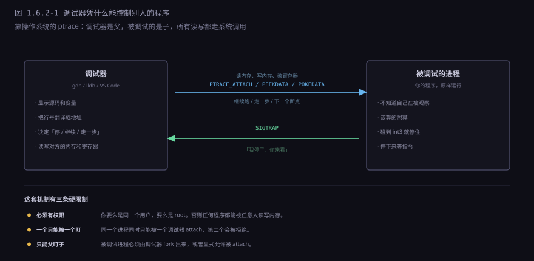
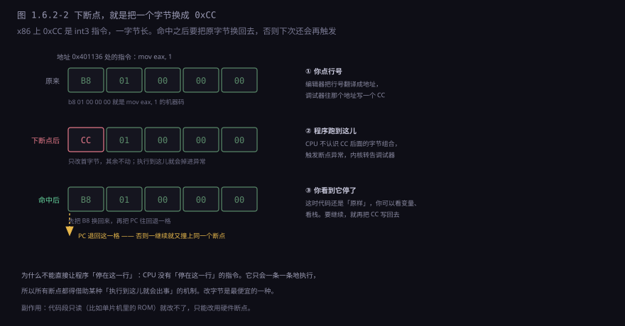
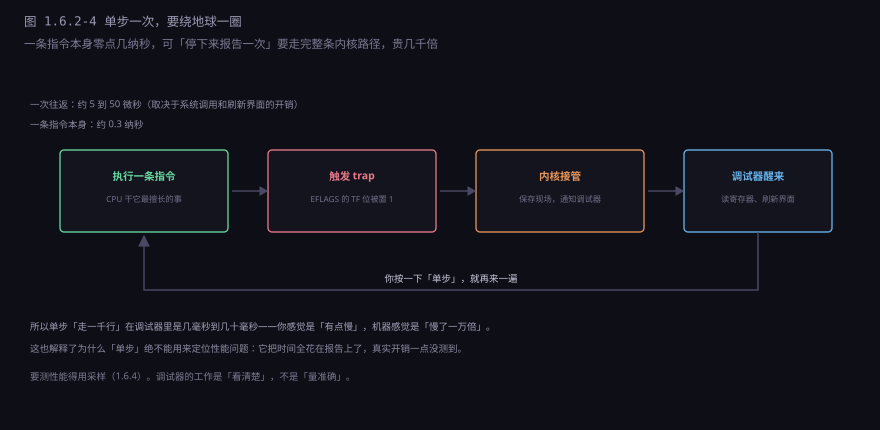
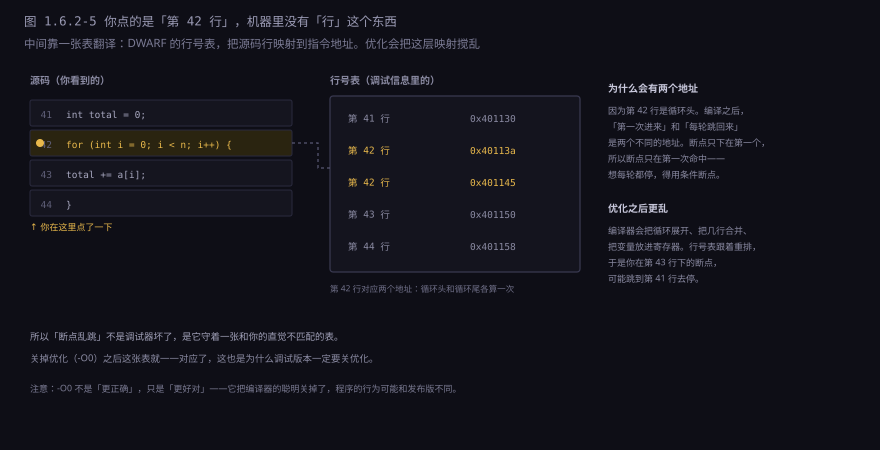
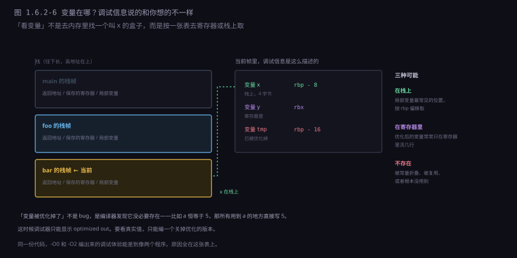

约 0.65 万字 · 6 张图 · 读完你能说清断点在机器层面到底是什么、 为什么点在一行的断点会跳到另一行、为什么优化过的程序没法好好调试， 以及为什么「停下来看一眼」这件事本身会改变程序的行为
在行号左边点一下，出现一个红点，程序跑到那儿就停。 这个交互从 1980 年代的符号调试器开始就没怎么变过，因为它确实好用： 你不用改一行代码，就能让程序在任意位置暂停，把当时的全部状态翻出来看。
但机器层面根本没有「暂停在这一行」这回事。CPU 只会做一件事：取出下一条指令、执行、取下一条。 它不认识行，不认识函数，更不认识你的变量名。
所以「停住」必须借助某种副作用： 想办法让 CPU 在跑到那个位置的时候出点事，出的事要能被操作系统捕获， 捕获之后要能通知到调试器。三种手段就是这么来的：
| 手段 | 怎么让它「出事」 | 典型用途 |
|---|---|---|
| 软件断点 | 把那条指令的首字节改成「陷阱指令」 | 点行号下的普通断点 |
| 硬件断点 | 让 CPU 自己比较地址 | 只读代码、精确监视 |
| 单步 | 让 CPU 每执行完一条就报一次 | 逐行看逻辑 |
三者没有高下之分，各自卡在不同的限制上。 下面一个一个拆。
先说一个前提问题：一个进程凭什么能读写另一个进程的内存？ 正常情况下当然不行——那是最基本的内存保护，否则任何程序都能偷别人的密码。

这扇门在 Linux 上叫 ptrace（process trace），在 Windows 上是
DebugActiveProcess 那一套。它们的模型一样：
调试器当父进程，被调试的程序当子进程，
子进程每次「出事」（触发断点、收到信号、退出）都要先停下来告诉父进程。
典型的调用顺序是这样的：
ptrace(PTRACE_ATTACH, pid) // 挂上去，让对方停下来
ptrace(PTRACE_PEEKDATA, pid, addr) // 读对方某个地址的 8 个字节
ptrace(PTRACE_POKEDATA, pid, addr, val) // 写
ptrace(PTRACE_GETREGS, pid, 0, ®s) // 把全部寄存器捞出来
ptrace(PTRACE_CONT, pid) // 放它继续跑，直到下次出事
ptrace(PTRACE_SINGLESTEP, pid) // 只放它跑一条指令注意这里没有一条是「读变量 x」。调试器拿到的是地址和字节， 至于「哪个地址是变量 x」，那是下一节要讲的调试信息干的活。
这套机制有三条硬限制，都是权限问题，绕不过去： 要么同用户要么 root； 一个进程同时只能被一个调试器挂住（第二个会被拒绝，这就是「另一个调试器正在运行」的报错来源）； 只能父盯子，或者显式允许被 attach。
最常见的手段，也是最土的一个：把目标指令的第一个字节换成 0xCC。

完整的流程有五个步骤，缺一步都会出问题：
1. 下断点 把 addr 处的首字节存起来，写入 0xCC
2. 执行到 CPU 执行 0xCC，触发断点异常，内核通知调试器
3. 恢复 调试器把原字节写回去（否则你看到的内存是坏的）
4. 回退 PC 减 1，指回这条指令的开头（否则一继续就又撞上）
5. 继续 如果还要保留断点，把 0xCC 再写回去，然后放行
第 4 步是最容易被忽略的。执行 0xCC 之后，PC 已经指向下一个字节了，
因为 CPU 认为这条一字节的指令已经执行完。可它其实只是一个「占位符」，
真正的指令还没执行。所以必须把 PC 往回挪一格，让它重新指向这条指令的开头。
这也解释了一个很常见的困惑：为什么断点打在有优化的代码上，有时会「跳过」一次。 如果你在同一个位置反复继续，恢复原字节、单步执行一条、再写回 0xCC， 这三步之间有一个时间窗。如果这条指令本身会跳转，或者别的线程改了这个位置，就可能错过。
软件断点最大的限制是：它要写内存。 如果代码在只读段（比如单片机烧在 Flash 里的固件、游戏卡带、某些嵌入式设备的 ROM）， 写不进去，断点就下不上。这时候只能换硬件断点。
CPU 里有几个专门的寄存器，叫调试寄存器。x86 上有四个，叫 DR0 到 DR3。 你往里面写一个地址，再在控制寄存器里设好「要监视读还是写」， CPU 就会在执行时不停比较：当前访问的地址是不是这几个之一，是就停下来。
它和软件断点的区别很关键： 软件断点比较的是「执行到哪个地址」，硬件断点可以比较「读写了哪个地址」。 后者带来一个非常好用的功能——监视点（watchpoint）。
变量 total 明明没赋值，怎么自己变了？
watch total // 设一个写监视点
继续跑
→ 程序停在某一行：total = 0;
就是这儿改的。原来是一段十年前的老代码在偷偷重置它。这类 bug 靠读代码几乎找不到，靠打日志又太笨，靠断点得在所有可能的位置都下一遍。 监视点是唯一能直接回答「谁改了这个变量」的工具。
代价是那两个数字：只有四个，而且监视点和硬件断点共用这四个。 用完就没了，第五个下不上。这不是软件舍不得给，是 CPU 的硬件限制， 换台机器、换个操作系统，还是四个。
到这里四种手段都出场了，摆在一起看，各自的位置就清楚了：
单步用的是另一个机制：CPU 的状态寄存器里有一个「陷阱标志位」（trap flag）。 把它置 1 之后，每执行完一条指令，CPU 就主动触发一次异常。 调试器收到通知，看看现在到哪儿了，再把标志位设回去，放它跑下一条。

所以单步慢，不是因为指令慢，是因为每条指令都伴随一次用户态到内核态的往返，
外加调试器刷新一次界面。这个开销和指令本身的工作量完全无关——
你单步一行 a + b 和单步一行 sort(arr)，
在调试器里的「一步」耗时居然差不多，因为时间全花在报告上了。
顺手解释三个常被搞混的按钮：
| 操作 | 实际做了什么 | 什么时候用 |
|---|---|---|
| 步过（Step Over） | 在下一行设临时断点，然后全速跑 | 这行调用了一个你不想进去的函数 |
| 步入（Step Into） | 真的单步，指令级 | 想看看这个函数内部怎么跑的 |
| 步出（Step Out） | 在返回地址设临时断点，全速跑 | 这个函数看够了，想回到调用者 |
注意「步过」和「步出」都不是单步，它们是「临时断点 + 全速运行」。
所以它们很快——这也解释了为什么「步过一行调用 sort()」是瞬间完成的，
而「步入 sort() 再单步走」会慢到令人放弃。
你点的是一行源码，机器里只有地址。中间靠调试信息翻译—— Linux 上是 DWARF，Windows 上是 PDB。

这张表就是-g 编译选项生成的东西。没有它，调试器只能给你看汇编和十六进制，
不知道哪条指令对应哪一行、哪个变量叫什么名字。
一旦开了优化，这张表就开始失真。编译器会做几件事，每一件都在破坏映射：
合并。几个相邻的语句被合成一条指令，原来五行现在只有一个地址， 你在中间三行下的断点全都落到同一个地方。
重排。为了减少跳转，编译器会把代码块的顺序打乱。 第 43 行的指令可能被排到第 41 行前面，于是断点的命中顺序和源码顺序不一致。
内联。小函数被直接展开到调用处。你在那个函数里下的断点， 可能命中在十个不同的地方——因为它被内联了十次。
这就是「Release 模式下断点乱跳」的全部原因。不是调试器笨， 是它守着一张已经被编译器重写过的表，而你的直觉还停在源码的顺序上。
还有两个由此产生的日常现象，知道原理就不奇怪了：
断点下在注释行、空白行、或者 } 上，会自动跳到下一行有指令的地方。
因为那些位置根本没有对应的机器码，调试器只能往最近的有效地址挪。
同理，如果一个函数只有一行（比如 int f() { return 1; }），
在它身上下的断点，命中的位置常常让你意外。
条件断点也是一个普通断点。
你写 i == 999，调试器不会让 CPU 帮你判断——
它还是在那一行下 0xCC，每次命中都停下来，读一下 i，
不满足条件就悄悄继续。所以条件越晚成立，代价越高：
在一个跑一百万次的循环里，它会真的停一百万次、判断一百万次，
每次都是一轮完整的内核往返。慢到你以为程序卡死了。
把鼠标悬在变量上，值就出来了。这个过程比看起来复杂： 调试器得先知道这个变量此刻存在哪儿。

三种情况各自有各自的坑：
在栈上最常见。位置写成「相对帧指针的偏移」， 取的时候按当前帧指针加偏移算地址。这类变量最可靠，除非栈被写坏了。
在寄存器里是优化后的常态。编译器发现某个变量只在几行内用到， 就干脆让它住寄存器，不占内存。这时候调试信息会写「y 在 rbx」， 可问题是寄存器会被复用——你单步到下一行，rbx 可能已经装了别的东西， 界面上 y 的值就变成了一个莫名其妙的数。
不存在就是彻底没了。变量被常量折叠（const int a = 5 之后所有 a 都换成 5）、
被死代码消除（算了但没人用）、或者被证明和另一个变量等价（直接复用）。
这时候调试器只能说 optimized out。
volatile 读，或者把它打印出来，或者干脆把这个文件单独用 -O0 编。
不要试图和优化器较劲——它是对的，你只是想看中间结果。
调试器界面上那一列「main → foo → bar」，叫调用栈。 它看起来理所当然，其实要解决一个很麻烦的问题： 栈上只有当前帧的信息，上一帧在哪，得算出来。
最老的办法是「帧指针链」。每个函数开头把上一个函数的帧指针压栈， 于是栈上就形成一条链：当前 rbp 指向的格子里存着上一个 rbp， 顺着往上走就能把每一帧串起来。
bar 的帧: [ 上一个 rbp ] ← rbp 现在指这儿
[ 返回地址 ]
[ 局部变量 ]
foo 的帧: [ 上一个 rbp ]
...
这个办法简单有效，但有一个致命弱点：它要占一个寄存器。
x86-64 只有 16 个通用寄存器，优化器很想把 rbp 也拿去用。
于是有了 -fomit-frame-pointer 这个选项（现在很多编译器默认就开），
帧指针链就断了。
现代调试器用的是另一套东西：DWARF 的调用帧信息（CFI）。 编译器在调试信息里写一张表，描述「从这个地址的这条指令，怎么算出上一帧的返回地址和栈指针」。 展开栈的时候，调试器逐帧查表、逐帧恢复寄存器，一层层往上走。
这解释了为什么有些栈回溯会缺帧或者错位： CFI 表是按地址区间写的，如果 PC 落在一个表里没描述的位置 （比如手写的汇编、JIT 生成的代码、被内联搅乱的地方）， 调试器就不知道该怎么往上走，只能停下，栈就断在那儿。
调试器能读内存，自然也能写。所以它还能做几件「改程序行为」的事：
改变量的值。把 count 从 0 改成 100，继续跑，
看看后面的逻辑对不对。这是最快的「如果输入是这样会怎样」实验。
改 PC。直接把程序计数器指到另一行，跳过一段代码。 用来验证「这段是不是罪魁祸首」特别快。
强制返回。让当前函数立刻返回一个指定值， 不执行剩下的部分。排查「是不是这个函数返回值不对」时很好用。
这些操作在底层都只是 ptrace 的写操作，没有任何魔法。
但它们有一个共同的风险：你破坏了程序的不变式。
你手动跳过了 malloc 的失败分支：
ptr = malloc(n);
if (!ptr) return -1; // 你把 PC 直接跳过了这行
memset(ptr, 0, n); // 于是这里对 NULL 写入 → 崩了
崩溃的原因不是你原来想查的 bug，
而是你刚刚制造的新 bug。所以改值、跳行这些手段，适合用来做实验、缩小范围， 不适合用来「修好再继续跑」——那样你测的已经不是原来的程序了。
这三个场景听起来很不一样，底下是同一套抽象。
远程调试。调试器在你这台机器上，程序跑在另一台（开发板、容器、手机）。 中间只需要一个「代理」：代理在那头执行 ptrace，这头用协议（gdbstub、DAP）发指令。 所以远程调试不是「通过网络调试」，是把 ptrace 搬到对面去执行。
多线程。默认行为是「一个断点触发，所有线程一起停」—— 这样你看到的是一个一致的快照，不会出现「我看的时候它还在变」。 但这也带来一个副作用：停下来这件事本身改变了线程的时序， 有些竞态 bug 就此消失（下一节细说）。
崩溃现场。程序已经死了，来不及调。 操作系统可以在它死的那一刻把整个内存镜像写成文件（core dump）， 事后拿调试器打开这个文件，栈、变量、寄存器全都在。 这相当于给程序的尸体做尸检，是线上问题排查的主力手段。
| 场景 | 调试器在哪 | 被调试的东西 |
|---|---|---|
| 本地调试 | 同一台机器 | 一个活着的进程 |
| 远程调试 | 另一台机器，通过代理 | 一个活着的进程 |
| 事后调试 | 任意机器 | 一个 core 文件 |
下面这几种情况，几乎每个用调试器的人都遇到过。它们不是 bug，是原理决定的。
一是优化过的代码。前面讲过：断点跳行、变量看不到、单步乱走。 根子是同一件事——源码和机器码之间不再是一一对应的。
二是内联。一个函数被展开到十个调用点， 你在函数体里下的断点会命中十次，而且每次的「调用栈」看起来都怪怪的 （因为它根本不在栈上）。
三是竞态。这是最气人的一类。程序平时一跑就崩，一开调试器就好了。 原因很实在：断点让所有线程停下来，等你按继续，这段时间足够让另一个线程把活干完。 那个「两个线程同时改一个变量」的窗口，被你亲手关上了。
四是实时系统和内核。前者要求「必须在几毫秒内响应」， 你让它停下来看变量，它就已经不是原来那个系统了； 后者没有普通进程的地址空间，得用双机调试（一台机器跑内核，另一台用串口或网线连上来看）。
调试器很强，但它的能力有一个明确的边界，值得说清楚。
它只能看「这一次运行」。
你停在一个断点上，看到 x = 42，这只说明这一次、这个输入、这个时刻它是 42。
换一个输入、换一个线程调度、换一台机器，它可能是别的值。
调试器不给你任何「所有情况下都成立」的结论。
停下来这件事本身会改变程序。 前面说的竞态是极端例子，但影响更广： 停下来会让缓存冷掉、让超时计时器继续走、让另一个进程抢走锁。 你观察到的状态，不是它自然运行时的状态。
它不能证明程序是对的。 你跑通了一百次，第一百零一次可能还是错的。 调试器只能证明「这一次是错的」——它给你的是反例，不是证明。
要回答「这个程序在所有情况下都对吗」，得换一套方法： 不是手动跑一次看，而是写一批检查，让机器每次都跑一遍。 那就是下一节的事：测试。